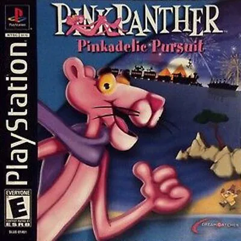
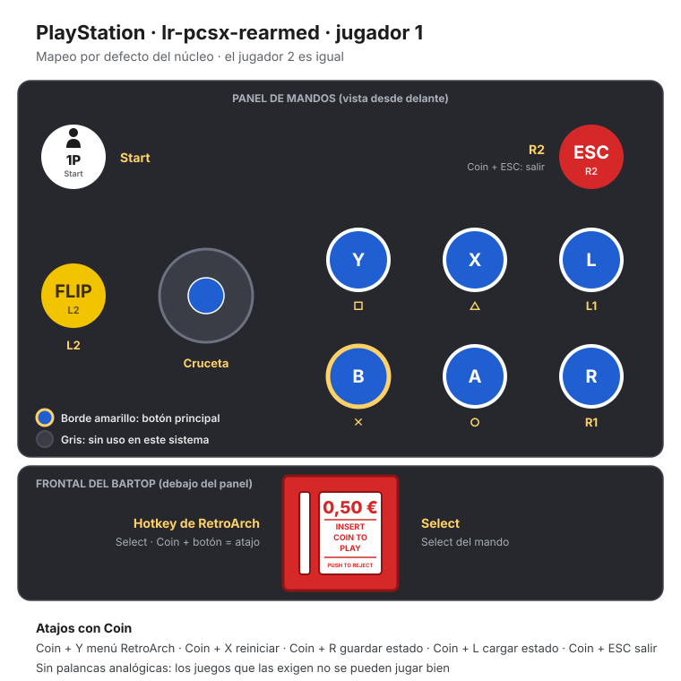

PlayStation
Pink Panther - Pinkadelic Pursuit
- Año: 2002
- Desarrollador: Etranges Libellules
- Género: Plataformas
- Jugadores: 1 jugador
Mientras pesca tranquilamente en alta mar un domingo por la tarde, la Pantera Rosa sale disparada de repente al espacio a bordo de un cohete. Este juego de plataformas con desplazamiento lateral tiene un estilo gráfico pensado para parecerse a los dibujos animados clásicos de United Artists. Guías a la Pantera Rosa por escenarios llenos de peligros, como la Edad de Piedra, la guarida de los gánsteres o el castillo de Drácula, sin perder nunca la calma. Por el camino encontrarás objetos y artilugios disparatados que te ayudan a cumplir tus objetivos: pantallas de lámpara, pintura, extintores, imanes e incluso bolas de bolera. Disfrázate, camúflate con el fondo, desactiva trampas y quítate de encima a los enemigos.
Controles
que X (△) esconda a la Pantera junto a puertas, plantas o enemigos (lejos de esos sitios no hace nada).
Mando de PlayStation (digital).
| Panel | Juego |
|---|---|
 | ✕ · Saltar |
 | ○ · Atacar · coger y soltar objetos |
 | R1 |
 | □ · Girar rápido |
 | △ · Esconderse (⚠️ confirmar) |
 | L1 |
 | R2 |
 | L2 |
 | Start |
 | Select |
| + | Salir del juego |
El panel en PlayStation


Longplay

Partida completa de la versión PlayStation (62 min), de World-of-Longplays: PSX Longplay [365] Pink Panther: Pinkadelic Pursuit.